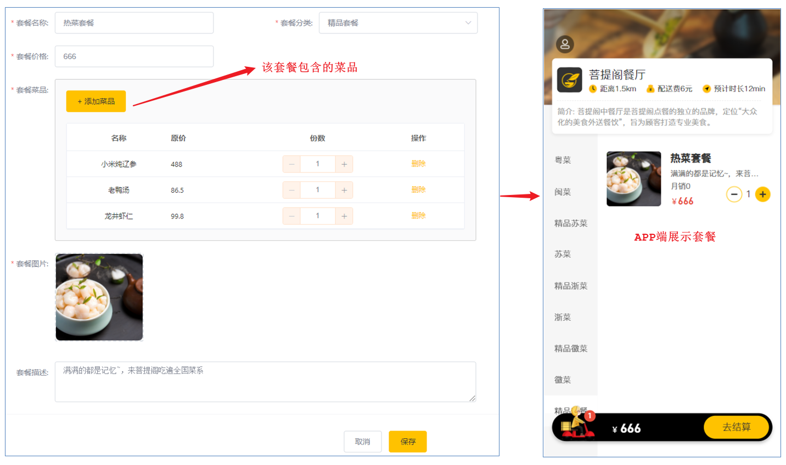

菜品分页查询
系统中的菜品数据很多的时候，如果在一个页面中全部展示出来会显得比较乱，不便于查看，所以一般的系统中都会以分页的方式来展示列表数据。
在菜品列表展示时，除了菜品的基本信息(名称、售价、售卖状态、更新时间)外，还有两个字段略微特殊，第一个是图片字段 ，我们从数据库查询出来的仅仅是图片的名字，图片要想在表格中回显展示出来，就需要下载这个图片。第二个是菜品分类，这里展示的是分类名称，而不是分类ID，此时我们就需要根据菜品的分类ID，去分类表中查询分类信息，然后在页面展示。
前端页面分析
在开发代码之前，需要梳理一下菜品分页查询时前端页面和服务端的交互过程：
访问页面(backend/page/food/list.html)时，发送ajax请求，将分页查询参数(page、pageSize、name)提交到服务端，获取分页数据
页面发送请求，请求服务端进行图片下载，用于页面图片展示


开发菜品信息分页查询功能，其实就是在服务端编写代码去处理前端页面发送的这2次请求即可，而前端发起的请求中， 图片文件下载回显的代码，我们已经实现了。所以，我们只需要开发分页查询的功能即可，分页查询具体的请求信息如下：
| 请求 | 说明 |
|---|---|
| 请求方式 | GET |
| 请求路径 | /dish/page |
| 请求参数 | ?page=1&pageSize=10&name=xxx |
代码实现
上述我们已经分析了分页查询的请求信息，那么接下来，我们就需要在 DishController中开发方法，来完成菜品的条件分页查询，在分页查询时还需要给页面返回分类的名称，而分类的名称前端在接收的时候是通过 categoryName 属性获取的，那么对应的服务端也应该封装到 categoryName 属性中。
<el-table-column prop="categoryName" label="菜品分类"></el-table-column>而在我们的实体类 Dish 中，仅仅包含 categoryId， 不包含 categoryName，那么我们应该如何封装查询的数据呢？ 其实，这里我们可以返回DishDto对象，在该对象中我们可以拓展一个属性 categoryName，来封装菜品分类名称。
@Data
public class DishDto extends Dish {
private List<DishFlavor> flavors = new ArrayList<>();
private String categoryName; //菜品分类名称
private Integer copies;
}具体逻辑为：
1). 构造分页条件对象
2). 构建查询及排序条件
3). 执行分页条件查询
4). 遍历分页查询列表数据，根据分类ID查询分类信息，从而获取该菜品的分类名称
5). 封装数据并返回
/**
* 菜品信息分页查询
* @param page
* @param pageSize
* @param name
* @return
*/
@GetMapping("/page")
public Res<Page> page(int page,int pageSize,String nam
//构造分页构造器对象
Page<Dish> pageInfo = new Page<>(page,pageSize);
Page<DishDto> dishDtoPage = new Page<>
//条件构造器
LambdaQueryWrapper<Dish> queryWrapper = new LambdaQueryWrapper<>();
//添加过滤条件
queryWrapper.like(name != null,Dish::getName,name);
//添加排序条件
queryWrapper.orderByDesc(Dish::getUpdateTim
//执行分页查询
dishService.page(pageInfo,queryWrappe
//对象拷贝
BeanUtils.copyProperties(pageInfo,dishDtoPage,"records
List<Dish> records = pageInfo.getRecords
List<DishDto> list = records.stream().map((item) -> {
DishDto dishDto = new DishDto
BeanUtils.copyProperties(item,dishDt
Long categoryId = item.getCategoryId();//分类id
//根据id查询分类对象
Category category = categoryService.getById(categoryI
if(category != null){
String categoryName = category.getName();
dishDto.setCategoryName(categoryName);
}
return dishDto;
}).collect(Collectors.toList(
dishDtoPage.setRecords(lis
return Res.success(dishDtoPage);
}数据库查询菜品信息时，获取到的分页查询结果 Page 的泛型为 Dish，而我们最终需要给前端页面返回的类型为 DishDto，所以这个时候就要进行转换，基本属性我们可以直接通过属性拷贝的形式对Page中的属性进行复制，而对于结果列表 records属性，我们是需要进行特殊处理的(需要封装菜品分类名称);
菜品修改
在菜品管理列表页面点击修改按钮，跳转到修改菜品页面，在修改页面回显菜品相关信息并进行修改，最后点击确定按钮完成修改操作。
前端页面分析
在开发代码之前，需要梳理一下修改菜品时前端页面（add.html）和服务端的交互过程：
点击菜品列表的中的修改按钮，携带菜品id跳转至add.html

进入add.html，页面发送ajax请求，请求服务端获取分类数据，用于菜品分类下拉框中数据展示(已实现)

add.html获取id, 发送ajax请求，请求服务端，根据id查询当前菜品信息，用于菜品信息回显
页面发送请求，请求服务端进行图片下载，用于页图片回显(已实现)
点击保存按钮，页面发送ajax请求，将修改后的菜品相关数据以json形式提交到服务端
1. 根据ID查询菜品及菜品口味信息
具体请求信息如下：
| 请求 | 说明 |
|---|---|
| 请求方式 | GET |
| 请求路径 | /dish/{id} |
2. 修改菜品及菜品口味信息
具体请求信息如下：
| 请求 | 说明 |
|---|---|
| 请求方式 | PUT |
| 请求路径 | /dish |
| 请求参数 | json格式数据 |
功能实现
页面发送ajax请求，请求服务端，根据id查询当前菜品信息和对应的口味信息，用于修改页面中菜品信息回显。
- 在DishService接口中扩展getByIdWithFlavor方法
//根据id查询菜品信息和对应的口味信息
public DishDto getByIdWithFlavor(Long id);- 在DishService实现类中实现此方法
具体逻辑为:
A. 根据ID查询菜品的基本信息
B. 根据菜品的ID查询菜品口味列表数据
C. 组装数据并返回
/**
* 根据id查询菜品信息和对应的口味信息
* @param id
* @return
*/
public DishDto getByIdWithFlavor(Long id) {
//查询菜品基本信息，从dish表查询
Dish dish = this.getById(i
DishDto dishDto = new DishDto();
BeanUtils.copyProperties(dish,dishDt
//查询当前菜品对应的口味信息，从dish_flavor表查询
LambdaQueryWrapper<DishFlavor> queryWrapper = new LambdaQueryWrapper<>();
queryWrapper.eq(DishFlavor::getDishId,dish.getId());
List<DishFlavor> flavors = dishFlavorService.list(queryWrapper);
dishDto.setFlavors(flavor
return dishDto;
}在DishController中创建get方法
/**
* 根据id查询菜品信息和对应的口味信息
* @param id
* @return
*/
@GetMapping("/{id}")
public Res<DishDto> get(@PathVariable Long i
DishDto dishDto = dishService.getByIdWithFlavor(i
return Res.success(dishDto);
}修改菜品信息
点击保存按钮，页面发送ajax请求，将修改后的菜品相关数据以json形式提交到服务端。在修改菜品信息时需要注意，除了要更新dish菜品表，还需要更新dish_flavor菜品口味表。
- 在DishService接口中扩展方法updateWithFlavor
//更新菜品信息，同时更新对应的口味信息
public void updateWithFlavor(DishDto dishDto);在DishServiceImpl中实现方法updateWithFlavor
在该方法中，我们既需要更新dish菜品基本信息表，还需要更新dish_flavor菜品口味表。而页面再操作时，关于菜品的口味，有修改，有新增，也有可能删除，我们应该如何更新菜品口味信息呢，其实，无论菜品口味信息如何变化，我们只需要保持一个原则： 先删除，后添加。
@Override
@Transactional
public void updateWithFlavor(DishDto dishDto) {
//更新dish表基本信息
this.updateById(dishDto);
//清理当前菜品对应口味数据---dish_flavor表的delete操作
LambdaQueryWrapper<DishFlavor> queryWrapper = new LambdaQueryWrapper();
queryWrapper.eq(DishFlavor::getDishId,dishDto.getId());
dishFlavorService.remove(queryWrapper);
//添加当前提交过来的口味数据---dish_flavor表的insert操作
List<DishFlavor> flavors = dishDto.getFlavors();
flavors = flavors.stream().map((item) -> {
item.setDishId(dishDto.getId());
return item;
}).collect(Collectors.toList());
dishFlavorService.saveBatch(flavors);
}在DishController中创建update方法
@PutMapping
public Res<String> update(@RequestBody DishDto dishDto){
log.info(dishDto.toString());
dishService.updateWithFlavor(dishDto);
return Res.success("修改菜品成功");
}新增套餐
套餐就是菜品的集合。
后台系统中可以管理套餐信息，通过新增套餐功能来添加一个新的套餐，在添加套餐时需要选择当前套餐所属的套餐分类和包含的菜品，并且需要上传套餐对应的图片，在移动端会按照套餐分类来展示对应的套餐。
数据模型
新增套餐，其实就是将新增页面录入的套餐信息插入到setmeal表，还需要向setmeal_dish表插入套餐和菜品关联数据。所以在新增套餐时，涉及到两个表：
| 表 | 说明 | 备注 |
|---|---|---|
| setmeal | 套餐表 | 存储套餐的基本信息 |
| setmeal_dish | 套餐菜品关系表 | 存储套餐关联的菜品的信息(一个套餐可以关联多个菜品) |
两张表具体的表结构如下:
1. 套餐表setmeal

在该表中，套餐名称name字段是不允许重复的，在建表时，已经创建了唯一索引。

2. 套餐菜品关系表setmeal_dish

在该表中，菜品的名称name,菜品的原价price 实际上都是冗余字段,因为我们在这张表中存储了菜品的ID(dish_id),根据该ID我们就可以查询出name,price的数据信息,而这里我们又存储了name,price,这样的话,我们在后续的查询展示操作中,就不需要再去查询数据库获取菜品名称和原价了,这样可以简化我们的操作。
在开发业务功能前，先将需要用到的类和接口基本结构创建好，在做这一块儿的准备工作时，我们无需准备Setmeal的相关实体类、Mapper接口、Service接口及实现。
这里就省略了。
前端页面分析
服务端的基础准备工作我们准备完毕之后，在进行代码开发之前，需要梳理一下新增套餐时前端页面和服务端的交互过程：
- 点击新建套餐按钮，访问页面(backend/page/combo/add.html)，页面加载发送ajax请求，请求服务端获取套餐分类数据并展示到下拉框中(已实现)

获取套餐分类列表的功能我们不用开发，之前已经开发完成了，之前查询时type传递的是1，查询菜品分类; 本次查询时，传递的type为2，查询套餐分类列表。
- 访问页面(backend/page/combo/add.html)，页面加载时发送ajax请求，请求服务端获取菜品分类数据并展示到添加菜品窗口中(已实现)

本次查询分类列表，传递的type为1，表示需要查询的是菜品的分类。查询菜品分类的目的，是添加套餐关联的菜品时，我们需要根据菜品分类，来过滤查询菜品信息。
- 当点击添加菜品窗口左侧菜单的某一个分类, 页面发送ajax请求，请求服务端，根据菜品分类查询对应的菜品数据并展示到添加菜品窗口中

页面发送请求进行图片上传，请求服务端将图片保存到服务器(已实现)
页面发送请求进行图片下载，将上传的图片进行回显(已实现)
点击保存按钮，发送ajax请求，将套餐相关数据以json形式提交到服务端
经过上述的页面解析及流程分析，我们发送这里需要发送的请求有5个，分别是 ：
A. 根据传递的参数,查询套餐分类列表
B. 根据传递的参数,查询菜品分类列表
C. 图片上传
D. 图片下载展示
E. 根据菜品分类ID,查询菜品列表
F. 保存套餐信息
而对于以上的前4个功能我们都已经实现, 所以我们接下来需要开发的功能主要是最后两项, 具体的请求信息如下:
1. 根据分类ID查询菜品列表
| 请求 | 说明 |
|---|---|
| 请求方式 | GET |
| 请求路径 | /dish/list |
| 请求参数 | ?categoryId=1397844263642378242 |
2. 保存套餐信息
| 请求 | 说明 |
|---|---|
| 请求方式 | POST |
| 请求路径 | /setmeal |
| 请求参数 | json格式数据 |
代码开发
在当前的需求中，我们只需要根据页面传递的菜品分类的ID(categoryId)来查询菜品列表即可，我们可以直接定义一个DishController的方法，声明一个Long类型的categoryId，这样做是没问题的。但是考虑到该方法的拓展性，我们在这里定义方法时，通过Dish这个实体来接收参数。
在DishController中定义方法list，接收Dish类型的参数：
在查询时，需要根据菜品分类categoryId进行查询，并且还要限定菜品的状态为起售状态(status为1)，然后对查询的结果进行排序。
/**
* 根据条件查询对应的菜品数据
* @param dish
* @return
*/
@GetMapping("/list")
public Res<List<Dish>> list(Dish dish){
//构造查询条件
LambdaQueryWrapper<Dish> queryWrapper = new LambdaQueryWrapper<>();
queryWrapper.eq(dish.getCategoryId() != null ,Dish::getCategoryId,dish.getCategoryId());
//添加条件，查询状态为1（起售状态）的菜品
queryWrapper.eq(Dish::getStatus,1);
//添加排序条件
queryWrapper.orderByAsc(Dish::getSort).orderByDesc(Dish::getUpdateTime);
List<Dish> list = dishService.list(queryWrapper);
return Res.success(list);
}保存套餐
在进行套餐信息保存时，前端提交的数据，不仅包含套餐的基本信息，还包含套餐关联的菜品列表数据 setmealDishes。所以这个时候我们使用Setmeal就不能完成参数的封装了，我们需要在Setmeal的基本属性的基础上，再扩充一个属性 setmealDishes 来接收页面传递的套餐关联的菜品列表，而我们在准备工作中，导入进来的SetmealDto能够满足这个需求。
SetmealController中定义方法save，新增套餐
在该Controller的方法中,我们不仅需要保存套餐的基本信息，还需要保存套餐关联的菜品数据，所以我们需要再该方法中调用业务层方法,完成两块数据的保存。
页面传递的数据是json格式，需要在方法形参前面加上@RequestBody注解, 完成参数封装。
@PostMapping
public Res<String> save(@RequestBody SetmealDto setmealDto){
log.info("套餐信息：{}",setmealDto);
setmealService.saveWithDish(setmealDto);
return Res.success("新增套餐成功");
}- SetmealService中定义方法saveWithDish
/**
* 新增套餐，同时需要保存套餐和菜品的关联关系
* @param setmealDto
*/
public void saveWithDish(SetmealDto setmealDto);SetmealServiceImpl实现方法saveWithDish
具体逻辑:
A. 保存套餐基本信息
B. 获取套餐关联的菜品集合，并为集合中的每一个元素赋值套餐ID(setmealId)
C. 批量保存套餐关联的菜品集合
/**
* 新增套餐，同时需要保存套餐和菜品的关联关系
* @param setmealDto
*/
@Transactional
public void saveWithDish(SetmealDto setmealDto) {
//保存套餐的基本信息，操作setmeal，执行insert操作
this.save(setmealDto);
List<SetmealDish> setmealDishes = setmealDto.getSetmealDishes();
setmealDishes.stream().map((item) -> {
item.setSetmealId(setmealDto.getId());
return item;
}).collect(Collectors.toList());
//保存套餐和菜品的关联信息，操作setmeal_dish,执行insert操作
setmealDishService.saveBatch(setmealDishes);
}套餐分页查询
系统中的套餐数据很多的时候，如果在一个页面中全部展示出来会显得比较乱，不便于查看，所以一般的系统中都会以分页的方式来展示列表数据。在进行套餐数据的分页查询时，除了传递分页参数以外，还可以传递一个可选的条件(套餐名称)。查询返回的字段中，包含套餐的基本信息之外，还有一个套餐的分类名称，在查询时，需要关联查询这个字段。
前端页面分析
在开发代码之前，需要梳理一下套餐分页查询时前端页面和服务端的交互过程：
- 访问页面(backend/page/combo/list.html)，页面加载时，会自动发送ajax请求，将分页查询参数(page、pageSize、name)提交到服务端，获取分页数据

- 在列表渲染展示时，页面发送请求，请求服务端进行图片下载，用于页面图片展示(已实现)

而对于以上的流程中涉及到2个功能,文件下载功能我们已经实现,本小节我们主要实现列表分页查询功能, 具体的请求信息如下:
| 请求 | 说明 |
|---|---|
| 请求方式 | GET |
| 请求路径 | /setmeal/page |
| 请求参数 | ?page=1&pageSize=10&name=xxx |
代码开发
上述我们已经分析列表分页查询功能的请求信息，接下来我们就在SetmealController中创建套餐分页查询方法。
该方法的逻辑如下：
构建分页条件对象
构建查询条件对象，如果传递了套餐名称，根据套餐名称模糊查询， 并对结果按修改时间降序排序
执行分页查询
组装数据并返回
服务端仅返回分类ID(categoryId), 而页面展示需要的是categoryName属性。在查询套餐信息时, 只包含套餐的基本信息, 并不包含套餐的分类名称, 所以在这里查询到套餐的基本信息后, 还需要根据分类ID(categoryId), 查询套餐分类名称(categoryName)，并最终将套餐的基本信息及分类名称信息封装到SetmealDto中。
/**
* 套餐分页查询
* @param page
* @param pageSize
* @param name
* @return
*/
@GetMapping("/page")
public Res<Page> page(int page,int pageSize,String name){
//分页构造器对象
Page<Setmeal> pageInfo = new Page<>(page,pageSize);
Page<SetmealDto> dtoPage = new Page<>
LambdaQueryWrapper<Setmeal> queryWrapper = new LambdaQueryWrapper<>();
//添加查询条件，根据name进行like模糊查询
queryWrapper.like(name != null,Setmeal::getName,name);
//添加排序条件，根据更新时间降序排列
queryWrapper.orderByDesc(Setmeal::getUpdateTim
setmealService.page(pageInfo,queryWrappe
//对象拷贝
BeanUtils.copyProperties(pageInfo,dtoPage,"records");
List<Setmeal> records = pageInfo.getRecords
List<SetmealDto> list = records.stream().map((item) -> {
SetmealDto setmealDto = new SetmealDto();
//对象拷贝
BeanUtils.copyProperties(item,setmealDto);
//分类id
Long categoryId = item.getCategoryId();
//根据分类id查询分类对象
Category category = categoryService.getById(categoryId);
if(category != null){
//分类名称
String categoryName = category.getName();
setmealDto.setCategoryName(categoryName);
}
return setmealDto;
}).collect(Collectors.toList(
dtoPage.setRecords(list);
return Res.success(dtoPage);
}删除套餐
在套餐管理列表页面,点击删除按钮，可以删除对应的套餐信息。也可以通过复选框选择多个套餐，点击批量删除按钮一次删除多个套餐。注意，对于状态为售卖中的套餐不能删除，需要先停售，然后才能删除。
前端分析
在开发代码之前，需要梳理一下删除套餐时前端页面和服务端的交互过程：
1). 点击删除, 删除单个套餐时，页面发送ajax请求，根据套餐id删除对应套餐

2). 删除多个套餐时，页面发送ajax请求，根据提交的多个套餐id删除对应套餐

开发删除套餐功能，其实就是在服务端编写代码去处理前端页面发送的这2次请求即可，一次请求为根据ID删除，一次请求为根据ID批量删除。
观察删除单个套餐和批量删除套餐的请求信息可以发现，两种请求的地址和请求方式都是相同的，不同的则是传递的id个数，所以在服务端可以提供一个方法来统一处理。
具体的请求信息如下：
| 请求 | 说明 |
|---|---|
| 请求方式 | DELETE |
| 请求路径 | /setmeal |
| 请求参数 | ?ids=1423640210125656065,1423338765002256385 |
代码开发
在SetmealController中创建delete方法
SetmealService接口定义方法removeWithDish
@DeleteMapping
public Res<String> delete(@RequestParam List<Long> ids){
log.info("ids:{}",ids);
setmealService.removeWithDish(ids);
return Res.success("套餐数据删除成功");
}SetmealServiceImpl中实现方法removeWithDish
该业务层方法具体的逻辑为:
A. 查询该批次套餐中是否存在售卖中的套餐, 如果存在, 不允许删除
B. 删除套餐数据
C. 删除套餐关联的菜品数据
/**
* 删除套餐，同时需要删除套餐和菜品的关联数据
* @param ids
*/
@Transactional
public void removeWithDish(List<Long> ids) {
//select count(*) from setmeal where id in (1,2,3) and status = 1
//查询套餐状态，确定是否可用删除
LambdaQueryWrapper<Setmeal> queryWrapper = new LambdaQueryWrapper();
queryWrapper.in(Setmeal::getId,ids);
queryWrapper.eq(Setmeal::getStatus,1);
int count = this.count(queryWrapper);
if(count > 0){
//如果不能删除，抛出一个业务异常
throw new CustomException("套餐正在售卖中，不能删除");
}
//如果可以删除，先删除套餐表中的数据---setmeal
this.removeByIds(ids);
//delete from setmeal_dish where setmeal_id in (1,2,3)
LambdaQueryWrapper<SetmealDish> lambdaQueryWrapper = new LambdaQueryWrapper<>();
lambdaQueryWrapper.in(SetmealDish::getSetmealId,ids);
//删除关系表中的数据----setmeal_dish
setmealDishService.remove(lambdaQueryWrapper);
}由于当前的业务方法中存在多次数据库操作，为了保证事务的完整性，需要在方法上加注解 @Transactional 来控制事务。